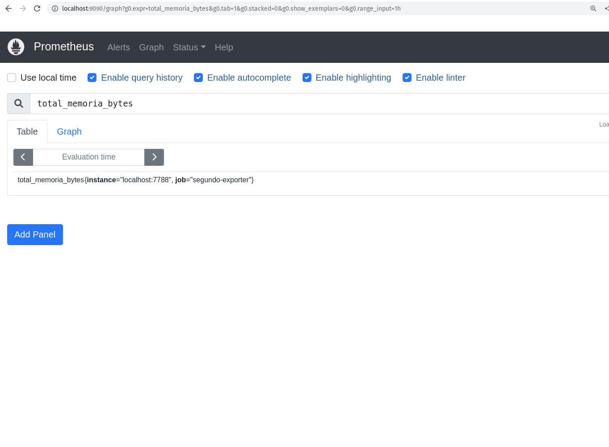

Descomplicando o Prometheus
DAY-3
O que iremos ver hoje?
Durante o nosso terceiro dia nessa jornada do conhecimento em relação ao Prometheus, vamos entender e aprender como construir um exporter, o nosso segundo exporter, e dessa vez em Go.
Vamos aprender muito sobre operadores, como o and e o or, e como podemos utilizar esses operadores para criar queries mais complexas e que nos ajudem a entender melhor o que está acontecendo com nossos serviços.
Vamos ainda aprender muito sobre o sensacional Node Exporter, como configura-lo e consultar as métricas que ele nos disponibiliza.
E claro, realizar algumas queries durante o dia de hoje, somente para não perder o costume.
Ahhh, já vamos deixar o Grafana instalado e configurado para que possamos utiliza-lo durante o Day-4. Vamos instalar hoje, no Day-3, somente para deixa-lo um pouco mais ansioso para o nosso próximo dia de aprendizado. :D
Conteúdo do Day-3
DAY-3
- Descomplicando o Prometheus
- DAY-3
- O que iremos ver hoje?
- Conteúdo do Day-3
- Criando o nosso segundo exporter
- As Funções
- A função rate
- A função irate
- A função delta
- A função increase
- A função sum
- A função count
- A função avg
- A função min
- A função max
- A função avg_over_time
- A função sum_over_time
- A função max_over_time
- A função min_over_time
- A função stddev_over_time
- A função by
- A função without
- A função histogram_quantile e quantile
- Praticando e usando as funções
- Operadores
- Operador de igualdade
- Operador de diferença
- Operador de maior que
- Operador de menor que
- Operador de maior ou igual que
- Operador de menor ou igual que
- Operador de multiplicação
- Operador de divisão
- Operador de adição
- Operador de subtração
- Operador de modulo
- Operador de potenciação
- Operador de agrupamento
- Operador de concatenação
- Operador de comparação de strings
- Chega de operadores por hoje
- O Node Exporter
- Habilitando novos collectors no Node Exporter
- Algumas queries capturando métricas do Node Exporter
- Chega por hoje!
- Lição de casa
- Referências
- DAY-3
Criando o nosso segundo exporter
Agora que já vimos como criar um exporter, vamos criar um segundo exporter para monitorar o consumo de memória do nosso servidor.
Hoje vamos criar um exporter em Go, então antes de mais nada temos que instalar o Go em nossa máquina.
Para instalar o Go no Ubuntu, basta executar o seguinte comando:
sudo apt install golang
Veja no site oficial do Go como instalar em outras distribuições.
Criando o nosso exporter usando Go
Vamos criar um arquivo chamado segundo-exporter.go no diretório segundo-exporter e vamos adicionar o seguinte código:
package main
import ( // importando as bibliotecas necessárias
"log" // log
"net/http" // http
"github.com/pbnjay/memory" // biblioteca para pegar informações de memória
"github.com/prometheus/client_golang/prometheus" // biblioteca para criar o nosso exporter
"github.com/prometheus/client_golang/prometheus/promhttp" // biblioteca criar o servidor web
)
func memoriaLivre() float64 { // função para pegar a memória livre
memoria_livre := memory.FreeMemory() // pegando a memória livre através da função FreeMemory() da biblioteca memory
return float64(memoria_livre) // retornando o valor da memória livre
}
func totalMemory() float64 { // função para pegar a memória total
memoria_total := memory.TotalMemory() // pegando a memória total através da função TotalMemory() da biblioteca memory
return float64(memoria_total) // retornando o valor da memória total
}
var ( // variáveis para definir as nossas métricas do tipo Gauge
memoriaLivreBytesGauge = prometheus.NewGauge(prometheus.GaugeOpts{ // métrica para pegar a memória livre em bytes
Name: "memoria_livre_bytes", // nome da métrica
Help: "Quantidade de memória livre em bytes", // descrição da métrica
})
memoriaLivreMegabytesGauge = prometheus.NewGauge(prometheus.GaugeOpts{ // métrica para pegar a memória livre em megabytes
Name: "memoria_livre_megabytes", // nome da métrica
Help: "Quantidade de memória livre em megabytes", // descrição da métrica
})
totalMemoryBytesGauge = prometheus.NewGauge(prometheus.GaugeOpts{ // métrica para pegar a memória total em bytes
Name: "total_memoria_bytes", // nome da métrica
Help: "Quantidade total de memória em bytes", // descrição da métrica
})
totalMemoryGigaBytesGauge = prometheus.NewGauge(prometheus.GaugeOpts{ // métrica para pegar a memória total em gigabytes
Name: "total_memoria_gigabytes", // nome da métrica
Help: "Quantidade total de memória em gigabytes", // descrição da métrica
})
)
func init() { // função para registrar as métricas
prometheus.MustRegister(memoriaLivreBytesGauge) // registrando a métrica de memória livre em bytes
prometheus.MustRegister(memoriaLivreMegabytesGauge) // registrando a métrica de memória livre em megabytes
prometheus.MustRegister(totalMemoryBytesGauge) // registrando a métrica de memória total em bytes
prometheus.MustRegister(totalMemoryGigaBytesGauge) // registrando a métrica de memória total em gigabytes
}
func main() { // função principal
memoriaLivreBytesGauge.Set(memoriaLivre()) // setando o valor da métrica de memória livre em bytes
memoriaLivreMegabytesGauge.Set(memoriaLivre() / 1024 / 1024) // setando o valor da métrica de memória livre em megabytes
totalMemoryBytesGauge.Set(totalMemory()) // setando o valor da métrica de memória total em bytes
totalMemoryGigaBytesGauge.Set(totalMemory() / 1024 / 1024 / 1024) // setando o valor da métrica de memória total em gigabytes
http.Handle("/metrics", promhttp.Handler()) // criando o servidor web para expor as métricas
log.Fatal(http.ListenAndServe(":7788", nil)) // iniciando o servidor web na porta 7788
}
O código acima está todo comentado explicando o que cada linha faz, então não vou me estender muito explicando o código.
Mas básicamente estamos criando um exporter que vai expor 4 métricas:
memoria_livre_bytes- métrica que vai retornar a quantidade de memória livre em bytesmemoria_livre_megabytes- métrica que vai retornar a quantidade de memória livre em megabytestotal_memoria_bytes- métrica que vai retornar a quantidade total de memória em bytestotal_memoria_gigabytes- métrica que vai retornar a quantidade total de memória em gigabytes
Lembrando que estamos utilizando os pacotes prometheus para criar o nosso exporter e promhttp para expor as métricas através de um servidor web.
Também estamos utilizando o pacote memory para pegar as informações de memória do nosso servidor, valeu usuário do GitHub pbnjay por criar essa biblioteca.
Estamos utilizando o pacote log para logar os erros que possam acontecer e o pacote net/http para criar o webserver.
Agora vamos compilar o nosso código e executar o nosso exporter, mas antes precisamos instalar as bibliotecas que utilizamos em nosso código.
go mod init segundo-exporter
go mod tidy
Agora sim já podemos compilar o nosso código conforme o exemplo abaixo:
go build segundo-exporter.go
Perceba que foi gerado um binário Go chamado segundo-exporter, vamos executa-lo:
./segundo-exporter
Nós configuramos o web server do nosso exporter para rodar na porta 7788, vamos acessar a URL http://localhost:7788/metrics para ver as métricas que o nosso exporter está exportando.
Você pode verificar as métricas atráves do navegador ou utilizando o comando curl:
curl http://localhost:7788/metrics
A saída deve ser algo parecido com o exemplo abaixo:
# HELP go_gc_duration_seconds A summary of the pause duration of garbage collection cycles.
# TYPE go_gc_duration_seconds summary
go_gc_duration_seconds{quantile="0"} 4.4072e-05
go_gc_duration_seconds{quantile="0.25"} 4.4072e-05
go_gc_duration_seconds{quantile="0.5"} 8.7174e-05
go_gc_duration_seconds{quantile="0.75"} 8.7174e-05
go_gc_duration_seconds{quantile="1"} 8.7174e-05
go_gc_duration_seconds_sum 0.000131246
go_gc_duration_seconds_count 2
# HELP go_goroutines Number of goroutines that currently exist.
# TYPE go_goroutines gauge
go_goroutines 8
# HELP go_info Information about the Go environment.
# TYPE go_info gauge
go_info{version="go1.18.1"} 1
# HELP go_memstats_alloc_bytes Number of bytes allocated and still in use.
# TYPE go_memstats_alloc_bytes gauge
go_memstats_alloc_bytes 4.69292e+06
# HELP go_memstats_alloc_bytes_total Total number of bytes allocated, even if freed.
# TYPE go_memstats_alloc_bytes_total counter
go_memstats_alloc_bytes_total 6.622168e+06
# HELP go_memstats_buck_hash_sys_bytes Number of bytes used by the profiling bucket hash table.
# TYPE go_memstats_buck_hash_sys_bytes gauge
go_memstats_buck_hash_sys_bytes 4248
# HELP go_memstats_frees_total Total number of frees.
# TYPE go_memstats_frees_total counter
go_memstats_frees_total 6221
# HELP go_memstats_gc_sys_bytes Number of bytes used for garbage collection system metadata.
# TYPE go_memstats_gc_sys_bytes gauge
go_memstats_gc_sys_bytes 4.709704e+06
# HELP go_memstats_heap_alloc_bytes Number of heap bytes allocated and still in use.
# TYPE go_memstats_heap_alloc_bytes gauge
go_memstats_heap_alloc_bytes 4.69292e+06
# HELP go_memstats_heap_idle_bytes Number of heap bytes waiting to be used.
# TYPE go_memstats_heap_idle_bytes gauge
go_memstats_heap_idle_bytes 2.392064e+06
# HELP go_memstats_heap_inuse_bytes Number of heap bytes that are in use.
# TYPE go_memstats_heap_inuse_bytes gauge
go_memstats_heap_inuse_bytes 5.24288e+06
# HELP go_memstats_heap_objects Number of allocated objects.
# TYPE go_memstats_heap_objects gauge
go_memstats_heap_objects 22935
# HELP go_memstats_heap_released_bytes Number of heap bytes released to OS.
# TYPE go_memstats_heap_released_bytes gauge
go_memstats_heap_released_bytes 1.662976e+06
# HELP go_memstats_heap_sys_bytes Number of heap bytes obtained from system.
# TYPE go_memstats_heap_sys_bytes gauge
go_memstats_heap_sys_bytes 7.634944e+06
# HELP go_memstats_last_gc_time_seconds Number of seconds since 1970 of last garbage collection.
# TYPE go_memstats_last_gc_time_seconds gauge
go_memstats_last_gc_time_seconds 1.6623888726616032e+09
# HELP go_memstats_lookups_total Total number of pointer lookups.
# TYPE go_memstats_lookups_total counter
go_memstats_lookups_total 0
# HELP go_memstats_mallocs_total Total number of mallocs.
# TYPE go_memstats_mallocs_total counter
go_memstats_mallocs_total 29156
# HELP go_memstats_mcache_inuse_bytes Number of bytes in use by mcache structures.
# TYPE go_memstats_mcache_inuse_bytes gauge
go_memstats_mcache_inuse_bytes 38400
# HELP go_memstats_mcache_sys_bytes Number of bytes used for mcache structures obtained from system.
# TYPE go_memstats_mcache_sys_bytes gauge
go_memstats_mcache_sys_bytes 46800
# HELP go_memstats_mspan_inuse_bytes Number of bytes in use by mspan structures.
# TYPE go_memstats_mspan_inuse_bytes gauge
go_memstats_mspan_inuse_bytes 107712
# HELP go_memstats_mspan_sys_bytes Number of bytes used for mspan structures obtained from system.
# TYPE go_memstats_mspan_sys_bytes gauge
go_memstats_mspan_sys_bytes 114240
# HELP go_memstats_next_gc_bytes Number of heap bytes when next garbage collection will take place.
# TYPE go_memstats_next_gc_bytes gauge
go_memstats_next_gc_bytes 5.281792e+06
# HELP go_memstats_other_sys_bytes Number of bytes used for other system allocations.
# TYPE go_memstats_other_sys_bytes gauge
go_memstats_other_sys_bytes 1.43568e+06
# HELP go_memstats_stack_inuse_bytes Number of bytes in use by the stack allocator.
# TYPE go_memstats_stack_inuse_bytes gauge
go_memstats_stack_inuse_bytes 688128
# HELP go_memstats_stack_sys_bytes Number of bytes obtained from system for stack allocator.
# TYPE go_memstats_stack_sys_bytes gauge
go_memstats_stack_sys_bytes 688128
# HELP go_memstats_sys_bytes Number of bytes obtained from system.
# TYPE go_memstats_sys_bytes gauge
go_memstats_sys_bytes 1.4633744e+07
# HELP go_threads Number of OS threads created.
# TYPE go_threads gauge
go_threads 13
# HELP memoria_livre_bytes Quantidade de memória livre em bytes
# TYPE memoria_livre_bytes gauge
memoria_livre_bytes 5.0984931328e+10
# HELP memoria_livre_megabytes Quantidade de memória livre em megabytes
# TYPE memoria_livre_megabytes gauge
memoria_livre_megabytes 48623.01953125
# HELP process_cpu_seconds_total Total user and system CPU time spent in seconds.
# TYPE process_cpu_seconds_total counter
process_cpu_seconds_total 0.02
# HELP process_max_fds Maximum number of open file descriptors.
# TYPE process_max_fds gauge
process_max_fds 1.048576e+06
# HELP process_open_fds Number of open file descriptors.
# TYPE process_open_fds gauge
process_open_fds 35
# HELP process_resident_memory_bytes Resident memory size in bytes.
# TYPE process_resident_memory_bytes gauge
process_resident_memory_bytes 1.4884864e+07
# HELP process_start_time_seconds Start time of the process since unix epoch in seconds.
# TYPE process_start_time_seconds gauge
process_start_time_seconds 1.66238886841e+09
# HELP process_virtual_memory_bytes Virtual memory size in bytes.
# TYPE process_virtual_memory_bytes gauge
process_virtual_memory_bytes 1.494904832e+09
# HELP process_virtual_memory_max_bytes Maximum amount of virtual memory available in bytes.
# TYPE process_virtual_memory_max_bytes gauge
process_virtual_memory_max_bytes 1.8446744073709552e+19
# HELP promhttp_metric_handler_requests_in_flight Current number of scrapes being served.
# TYPE promhttp_metric_handler_requests_in_flight gauge
promhttp_metric_handler_requests_in_flight 1
# HELP promhttp_metric_handler_requests_total Total number of scrapes by HTTP status code.
# TYPE promhttp_metric_handler_requests_total counter
promhttp_metric_handler_requests_total{code="200"} 6
promhttp_metric_handler_requests_total{code="500"} 0
promhttp_metric_handler_requests_total{code="503"} 0
# HELP total_memoria_bytes Quantidade total de memória em bytes
# TYPE total_memoria_bytes gauge
total_memoria_bytes 6.7332653056e+10
# HELP total_memoria_gigabytes Quantidade total de memória em gigabytes
# TYPE total_memoria_gigabytes gauge
total_memoria_gigabytes 62.70841979980469
Perceba que as nossas métricas estão lá, são elas:
memoria_livre_bytesmemoria_livre_megabytestotal_memoria_bytestotal_memoria_gigabytes
Está funcionando lindamente.
Adicionando o nosso exporter no container
Agora vamos adicionar o nosso segundo exporter em um outro container, para isso vamos criar um arquivo chamado Dockerfile no diretório segundo-exporter com o seguinte conteúdo:
FROM golang:1.19.0-alpine3.16 AS buildando
WORKDIR /app
COPY . /app
RUN go build segundo-exporter.go
FROM alpine:3.16
LABEL maintainer Jeferson Fernando <jeferson@linuxtips.com.br>
LABEL description "Executando o nosso segundo exporter"
COPY --from=buildando /app/segundo-exporter /app/segundo-exporter
EXPOSE 7788
WORKDIR /app
CMD ["./segundo-exporter"]
Agora vamos buildar a imagem do nosso segundo exporter, para isso vamos executar o seguinte comando:
docker build -t segundo-exporter:1.0 .
Vamos listar a nossa nova imagem de container com o nosso segundo exporter:
docker images | grep segundo-exporter
Muito bom, está lá, agora vamos executar o nosso segundo exporter:
docker run -d --name segundo-exporter -p 7788:7788 segundo-exporter:1.0
Agora vamos listar os nossos containers em execução:
docker ps
Ele está lá:
CONTAINER ID IMAGE COMMAND CREATED STATUS PORTS NAMES
e51e819c6069 segundo-exporter:1.0 "./segundo-exporter" 6 seconds ago Up 5 seconds 0.0.0.0:7788->7788/tcp, :::7788->7788/tcp segundo-exporter
Vamos acessar as métricas do nosso segundo exporter:
curl http://localhost:7788/metrics
Tudo funcionando maravilhosamente bem!
Adicionando o novo Target no Prometheus
Agora já podemos configurar o Prometheus para monitorar o nosso segundo exporter. Para isso temos que editar o arquivo prometheus.yml e adicionar o seguinte conteúdo:
global:
scrape_interval: 15s
evaluation_interval: 15s
rule_files:
scrape_configs:
- job_name: "prometheus"
static_configs:
- targets: ["localhost:9090"]
- job_name: "Meu Primeiro Exporter"
static_configs:
- targets: ["localhost:8899"]
- job_name: 'segundo-exporter'
static_configs:
- targets: ['localhost:7788']
Pronto, agora vamos fazer o restart do Prometheus para que ele carregue as novas configurações:
systemctl restart prometheus
Vocês também pode fazer isso via comando kill, mas o restart é mais gostosinho de ai meu dels.
kill -HUP $(pidof prometheus)
Agora vamos acessar o Prometheus e verificar se o novo target e as nossas novas métricas estão por lá:
http://localhost:9090
O nosso novo target está lá:

E as nossa novas métricas também:


As Funções
Uma coisa muito importante é se sentir confortável com o uso da PromQL, pois é com ela que iremos extrair o máximo de nossas métricas e também do mundo sensacional das time series.
Vamos conhecer algumas funções para criação de queries mais efetivas. Vou listar algumas e outras funções vamos conhecendo conforme vamos avançando.
A função rate
A função rate representa a taxa de crescimento por segundo de uma determinada métrica como média, durante um intervalo de tempo.
rate(metrica)[5m]
Onde metrica é a métrica que você deseja calcular a taxa de crescimento durante um intervalo de tempo de 5 minutos. Você pode utilizar a função rate para trabalhar com métricas do tipo gauge e counter.
Vamos para um exemplo real:
rate(prometheus_http_requests_total{job="prometheus",handler="/api/v1/query"}[5m])
Aqui estou calculando a média da taxa de crescimento por segundo da métrica prometheus_http_requests_total, filtrando por job e handler e durante um intervalo de tempo de 5 minutos. Nesse caso eu quero saber o crescimento nas queries que estão sendo feitas no Prometheus.
A função irate
A função irate representa a taxa de crescimento por segundo de uma determinada métrica, mas diferentemente da função rate, a função irate não faz a média dos valores, ela pega os dois últimos pontos e calcula a taxa de crescimento. Quando representado em um gráfico, é possível ver a diferença entre a função rate e a função irate, enquanto o gráfico com o rate é mais suave, o gráfico com o irate é mais "pontiagudo", você consegue ver quedas e subidas mais nítidas.
irate(metrica[5m])
Onde metrica é a métrica que você deseja calcular a taxa de crescimento, considerando somente os dois últimos pontos, durante um intervalo de tempo de 5 minutos.
Vamos para um exemplo real:
irate(prometheus_http_requests_total{job="prometheus",handler="/api/v1/query"}[5m])
Aqui estou calculando a taxa de crescimento por segundo da métrica prometheus_http_requests_total, considerando somente os dois últimos pontos, filtrando por job e handler e durante um intervalo de tempo de 5 minutos. Nesse caso eu quero saber o crescimento nas queries que estão sendo feitas no Prometheus.
A função delta
A função delta representa a diferença entre o valor atual e o valor anterior de uma métrica. Quando estamos falando de delta estamos falando por exemplo do consumo de um disco. Vamos imaginar que eu queira saber o quando eu usei de disco em um determinado intervalo de tempo, eu posso utilizar a função delta para calcular a diferença entre o valor atual e o valor anterior.
delta(metrica[5m])
Onde metrica é a métrica que você deseja calcular a diferença entre o valor atual e o valor anterior, durante um intervalo de tempo de 5 minutos.
Vamos para um exemplo real:
delta(prometheus_http_response_size_bytes_count{job="prometheus",handler="/api/v1/query"}[5m])
Agora estou calculando a diferença entre o valor atual e o valor anterior da métrica prometheus_http_response_size_bytes_count, filtrando por job e handler e durante um intervalo de tempo de 5 minutos. Nesse caso eu quero saber o quanto de bytes eu estou consumindo nas queries que estão sendo feitas no Prometheus.
A função increase
Da mesma forma que a função delta, a função increase representa a diferença entre o primeiro e último valor durante um intervalo de tempo, porém a diferença é que a função increase considera que o valor é um contador, ou seja, o valor é incrementado a cada vez que a métrica é atualizada.
Ela começa com o valor 0 e vai somando o valor da métrica a cada atualização.
Você já pode imaginar qual o tipo de métrica que ela trabalha, certo?
Qual? Counter!
increase(metrica[5m])
Onde metrica é a métrica que você deseja calcular a diferença entre o primeiro e último valor durante um intervalo de tempo de 5 minutos.
Vamos para um exemplo real:
increase(prometheus_http_requests_total{job="prometheus",handler="/api/v1/query"}[5m])
Aqui estou calculando a diferença entre o primeiro e último valor da métrica prometheus_http_requests_total, filtrando por job e handler e durante um intervalo de tempo de 5 minutos.
Você pode acompanhar o resultado dessa query clicando em Graph e depois em Execute, assim você vai ver o gráfico com o resultado da query fazendo mais sentindo.
A função sum
A função sum representa a soma de todos os valores de uma métrica.
Você pode utilizar a função sum nos tipos de dados counter, gauge, histogram e summary.
Um exemplo de uso da função sum é quando você quer saber o quanto de memória está sendo utilizada por todos os seus containers, ou o quanto de memória está sendo utilizada por todos os seus pods.
sum(metrica)
Onde metrica é a métrica que você deseja somar.
Vamos para um exemplo real:
sum(go_memstats_alloc_bytes{job="prometheus"})
Aqui estou somando todos os valores da métrica go_memstats_alloc_bytes, filtrando por job e durante um intervalo de tempo de 5 minutos.
A função count
Outra função bem utilizada é função count representa o contador de uma métrica.
Você pode utilizar a função count nos tipos de dados counter, gauge, histogram e summary.
Um exemplo de uso da função count é quando você quer saber quantos containers estão rodando em um determinado momento ou quantos de seus pods estão em execução.
count(metrica)
Onde metrica é a métrica que você deseja contar.
Vamos para um exemplo real:
count(prometheus_http_requests_total)
Teremos como resultado o número de valores que a métrica prometheus_http_requests_total possui.
A função avg
A função avg representa o valor médio de uma métrica.
Você pode utilizar a função avg nos tipos de dados counter, gauge, histogram e summary.
Essa é uma das funções mais utilizadas, pois é muito comum você querer saber o valor médio de uma métrica, por exemplo, o valor médio de memória utilizada por um container.
avg(metrica)
Onde metrica é a métrica que você deseja calcular a média.
A função min
A função min representa o valor mínimo de uma métrica.
Você pode utilizar a função min nos tipos de dados counter, gauge, histogram e summary.
Um exemplo de uso da função min é quando você quer saber qual o menor valor de memória utilizada por um container.
min(metrica)
Onde metrica é a métrica que você deseja calcular o mínimo.
A função max
A função max representa o valor máximo de uma métrica.
Um exemplo de uso da função max é quando você quer saber qual o maior valor de memória pelos nodes de um cluster Kubernetes.
max(metrica)
Onde metrica é a métrica que você deseja calcular o máximo.
A função avg_over_time
A função avg_over_time representa a média de uma métrica durante um intervalo de tempo.
Normalmente utilizada para calcular a média de uma métrica durante um intervalo de tempo, como por exemplo, a média de requisições por segundo durante um intervalo de tempo ou ainda as pessoas que estão no espaço durante o último ano. :D
avg_over_time(metrica[5m])
Onde metrica é a métrica que você deseja calcular a média durante um intervalo de tempo de 5 minutos.
Vamos para um exemplo real:
avg_over_time(prometheus_http_requests_total{handler="/api/v1/query"}[5m])
Agora estou calculando a média da métrica prometheus_http_requests_total, filtrando por handler e durante um intervalo de tempo de 5 minutos.
A função sum_over_time
Também temos a função sum_over_time, que representa a soma de uma métrica durante um intervalo de tempo. Vimos a avg_over_time que representa a média, a sum_over_time representa a soma dos valores durante um intervalo de tempo.
Imagina calcular a soma de uma métrica durante um intervalo de tempo, como por exemplo, a soma de requisições por segundo durante um intervalo de tempo ou ainda a soma de pessoas que estão no espaço durante o último ano.
sum_over_time(metrica[5m])
Onde metrica é a métrica que você deseja calcular a soma durante um intervalo de tempo de 5 minutos.
Vamos para um exemplo real:
sum_over_time(prometheus_http_requests_total{handler="/api/v1/query"}[5m])
Agora estou calculando a soma da métrica prometheus_http_requests_total, filtrando por handler e durante um intervalo de tempo de 5 minutos.
A função max_over_time
A função max_over_time representa o valor máximo de uma métrica durante um intervalo de tempo.
max_over_time(metrica[5m])
Onde metrica é a métrica que você deseja calcular o valor máximo durante um intervalo de tempo de 5 minutos.
Vamos para um exemplo real:
max_over_time(prometheus_http_requests_total{handler="/api/v1/query"}[5m])
Agora estamos buscando o valor máximo da métrica prometheus_http_requests_total, filtrando por handler e durante um intervalo de tempo de 5 minutos.
A função min_over_time
A função min_over_time representa o valor mínimo de uma métrica durante um intervalo de tempo.
min_over_time(metrica[5m])
Onde metrica é a métrica que você deseja calcular o valor mínimo durante um intervalo de tempo de 5 minutos.
Vamos para um exemplo real:
min_over_time(prometheus_http_requests_total{handler="/api/v1/query"}[5m])
Agora estamos buscando o valor mínimo da métrica prometheus_http_requests_total, filtrando por handler e durante um intervalo de tempo de 5 minutos.
A função stddev_over_time
A função stddev_over_time representa o desvio padrão, que são os valores que estão mais distantes da média, de uma métrica durante um intervalo de tempo.
Um bom exemplo seria para o calculo de desvio padrão para saber se houve alguma anomalia no consumo de disco, por exemplo.
stddev_over_time(metrica[5m])
Onde metrica é a métrica que você deseja calcular o desvio padrão durante um intervalo de tempo de 5 minutos.
Vamos para um exemplo real:
stddev_over_time(prometheus_http_requests_total{handler="/api/v1/query"}[10m])
Agora estamos buscando os desvios padrões da métrica prometheus_http_requests_total, filtrando por handler e durante um intervalo de tempo de 10 minutos. Vale a pena verificar o gráfico, pois facilita a visualização dos valores.
A função by
A sensacional e super utilizada função by é utilizada para agrupar métricas. Com ela é possível agrupar métricas por labels, por exemplo, se eu quiser agrupar todas as métricas que possuem o label job eu posso utilizar a função by da seguinte forma:
sum(metrica) by (job)
Onde metrica é a métrica que você deseja agrupar e job é o label que você deseja agrupar.
Vamos para um exemplo real:
sum(prometheus_http_requests_total) by (code)
Agora estamos somando a métrica prometheus_http_requests_total e agrupando por code, assim sabemos quantas requisições foram feitas por código de resposta.
A função without
A função without é utilizada para remover labels de uma métrica.
Você pode utilizar a função without nos tipos de dados counter, gauge, histogram e summary e frequentemente usado em conjunto com a função sum.
Por exemplo, se eu quiser remover o label `job` de uma métrica, eu posso utilizar a função `without` da seguinte forma:
```PROMQL
sum(metrica) without (job)
Onde metrica é a métrica que você deseja remover o label job.
Vamos para um exemplo real:
sum(prometheus_http_requests_total) without (handler)
Agora estamos somando a métrica prometheus_http_requests_total e removendo o label handler, assim sabemos quantas requisições foram feitas por código de resposta, sem saber qual handler foi utilizado para ter uma visão mais geral e focado no código de resposta.
A função histogram_quantile e quantile
As funções histogram_quantile e quantile são muito parecidas, porém a histogram_quantile é utilizada para calcular o percentil de uma métrica do tipo histogram e a quantile é utilizada para calcular o percentil de uma métrica do tipo summary.
Basicamente utilizamos esses funções para saber qual é o valor de uma métrica em um determinado percentil.
quantile(0.95, metrica)
Onde metrica é a métrica do tipo histogram que você deseja calcular o percentil e 0.95 é o percentil que você deseja calcular.
Vamos para um exemplo real:
quantile(0.95, prometheus_http_request_duration_seconds_bucket)
Agora estamos calculando o percentil de 95% da métrica prometheus_http_request_duration_seconds_bucket, assim sabemos qual é o tempo de resposta de 95% das requisições.
Praticando e usando as funções
Agora que já vimos a descrição de algumas funções, vamos começar a praticar e criar algumas queries utilizando as funções.
Vamos criar uma query para saber o quanto de cpu está sendo utilizado no nosso primeiro exporter durante cada execução.
sum(rate(process_cpu_seconds_total{job="Primeiro Exporter"}[1m])) by (instance)
Vamos entender melhor a query acima, o que ela faz?
- Onde
sum(rate(process_cpu_seconds_total{job="Primeiro Exporter"}[1m]))é a métrica que você deseja extrair. - Onde
by (instance)é o agrupamento que você deseja fazer.
Ok, conseguimos dividir a query em duas partes, a primeira é a métrica e seus detalhes e a segunda é o agrupamento.
Agora vamos dividir a primeira um pouco mais.
process_cpu_seconds_total{job="Primeiro Exporter"}[1m]
Nessa primeira query, estamos pedindo o valor da métrica process_cpu_seconds_total no último 1 minuto.
O retorno são 04 valores, pois o scraping do Prometheus é feito em intervalos de 15 segundos.

Maravilha, está rolando bem! Agora eu quero saber a média do consumo de cpu no nosso primeiro exporter durante o último 1 minuto.
avg(rate(process_cpu_seconds_total{job="Primeiro Exporter"}[1m]))

Com isso nós temos a média do consumo de cpu no nosso primeiro exporter durante o último 1 minuto, e perceba que estamos utilizando a função avg para calcular a média, porém estamos também utilizando a função rate.
Precisamos do rate para calcular a taxa de aumento dos valores da métrica durante o último 1 minuto, conforme solicitado na query acima.
Agora vamos adicionar mais um detalhe a nossa query.
by (instance)
Então ela ficará assim:
avg(rate(process_cpu_seconds_total{job="Primeiro Exporter"}[1m])) by (instance)
Com a função by adicionada, é possível agrupar os valores da métrica por um determinado campo, no nosso caso estamos agrupando por instance.
Em nosso exemplo somente temos uma instância no job Primeiro Exporter, então o agrupamente não tem efeito.
Mas se retirarmos da query o label job, o resultado trará também a instância do job prometheus.
avg(rate(process_cpu_seconds_total[1m])) by (instance)
Agora a saída trará também o valor da métrica para a instância do job prometheus.

Caso queira pegar o menor valor da métrica registrada no último 1 minuto, basta utilizar a função min.
min(rate(process_cpu_seconds_total[1m])) by (instance)
Caso queira pegar o maior valor da métrica registrada no último 1 minuto, basta utilizar a função max.
max(rate(process_cpu_seconds_total[1m])) by (instance)

Eu falei bastante sobre as queries e os valores que elas retornam, porém eu nem falei ainda para vocês clicarem na aba Graph e ver os gráficos que são gerados automaticamente.
Vamos ver o gráfico da média do consumo de cpu pelos jobs durante o último 1 minuto.

Operadores
Precisamos falar sobre os operadores, super importante para que possamos trazer ainda mais poder ao nosso querido PromQL e obter resultados ainda mais interessantes.
Vamos conhecer alguns!
Operador de igualdade
O operador de igualdade é utilizado para comparar se dois valores são iguais.
metrica == 1
Onde metrica é a métrica que você deseja comparar e 1 é o valor que você deseja comparar, logo se o valor da métrica for igual a 1, o resultado será verdadeiro.
Operador de diferença
O operador de diferença é utilizado para comparar se dois valores são diferentes.
metrica != 1
Onde metrica é a métrica que você deseja comparar e 1 é o valor que você deseja comparar, logo se o valor da métrica for diferente de 1, o resultado será verdadeiro.
Operador de maior que
O operador de maior que é utilizado para comparar se um valor é maior que outro.
metrica > 1
Onde metrica é a métrica que você deseja comparar e 1 é o valor que você deseja comparar, logo se o valor da métrica for maior que 1, o resultado será verdadeiro.
Operador de menor que
O operador de menor que é utilizado para comparar se um valor é menor que outro.
metrica < 1
Onde metrica é a métrica que você deseja comparar e 1 é o valor que você deseja comparar, logo se o valor da métrica for menor que 1, o resultado será verdadeiro.
Operador de maior ou igual que
O operador de maior ou igual que é utilizado para comparar se um valor é maior ou igual que outro.
metrica >= 1
Onde metrica é a métrica que você deseja comparar e 1 é o valor que você deseja comparar, logo se o valor da métrica for maior ou igual a 1, o resultado será verdadeiro.
Operador de menor ou igual que
O operador de menor ou igual que é utilizado para comparar se um valor é menor ou igual que outro.
metrica <= 1
Onde metrica é a métrica que você deseja comparar e 1 é o valor que você deseja comparar, logo se o valor da métrica for menor ou igual a 1, o resultado será verdadeiro.
Operador de multiplicação
O operador de multiplicação é utilizado para multiplicar dois valores.
metrica * 1
Onde metrica é a métrica que você deseja multiplicar e 1 é o valor que você deseja multiplicar, logo se o valor da métrica for multiplicado por 1, o resultado será o valor da métrica.
Operador de divisão
O operador de divisão é utilizado para dividir dois valores.
metrica / 1
Onde metrica é a métrica que você deseja dividir e 1 é o valor pelo qual você deseja dividir a metrica. O resultado será o valor da métrica dividido pelo valor que você passou.
Operador de adição
O operador de adição é utilizado para somar dois valores.
metrica + 1
Onde metrica é a métrica que você deseja somar e 1 é o valor que você deseja somar a metrica. O resultado será o valor da métrica somado ao valor que você passou.
Operador de subtração
O operador de subtração é utilizado para subtrair dois valores.
metrica - 1
Onde metrica é a métrica que você deseja subtrair e 1 é o valor que você deseja subtrair da metrica. O resultado será o valor da métrica subtraído pelo valor que você passou.
Operador de modulo
O operador de modulo é utilizado para obter o resto da divisão de dois valores.
metrica % 1
Onde metrica é a métrica que você deseja obter o resto da divisão e 1 é o valor pelo qual você deseja obter o resto da divisão da metrica. O resultado será o resto da divisão da métrica pelo valor que você passou.
Operador de potenciação
O operador de potenciação é utilizado para elevar um valor a uma potência.
metrica ^ 1
Onde metrica é a métrica que você deseja elevar a uma potência e 1 é o valor que você deseja elevar a metrica. O resultado será o valor da métrica elevado ao valor que você passou.
Operador de agrupamento
O operador de agrupamento é utilizado para agrupar expressões.
(metrica + 1) / 2
Perceba que o parenteses foi utilizado para agrupar a expressão (metrica + 1). Onde metrica é a métrica que você deseja somar e 1 é o valor que você deseja somar a metrica. Essa parte da expressão será avaliada primeiro e o resultado será dividido por 2.
Operador de concatenação
O operador de concatenação é utilizado para concatenar strings.
"string_a" + "string_b"
Onde string_a é a primeira string que você deseja concatenar e string_b é a segunda string que você deseja concatenar. O resultado será a concatenação das duas strings, ou seja, a primeira string seguida da segunda string.
Operador de comparação de strings
O operador de comparação de strings é utilizado para comparar se duas strings são iguais.
"string_a" == "string_b"
Onde string_a é a primeira string que você deseja comparar e string_b é a segunda string que você deseja comparar. O resultado será verdadeiro se as duas strings forem iguais.
Chega de operadores por hoje
Conforme você for avançando nos estudos, você irá perceber que esses operadores são muito úteis para criar expressões mais complexas e que podem ser utilizadas para criar alertas mais precisos. Ainda temos alguns operadores que não foram abordados aqui, mas que você pode encontrar na documentação oficial do Prometheus e tbm no decorrer do treinamento.
O Node Exporter
Precisamos falar do exporter mais famoso do universo Prometheus, o sensacional Node Exporter. Com o Node Exporter você consegue coletar métricas de um servidor Linux ou em computadores MacOS, como por exemplo, o uso de CPU, disco, memória, open files, etc.
O Node Exporter é um projeto open source e escrito em Go. Ele é executado no Linux como um serviço e coleta e expõe as métricas do sistema operacional.
Os Collectors
O Node Exporter possui os collectors que são os responsáveis por capturar as métricas do sistema operacional. Por padrão, o Node Exporter vem com um monte de coletores habilitados, mas você pode habilitar outros, caso queira.
Para que você possa consultar a lista de collectors que vem habilitados por padrão, você pode acessar o link abaixo:
Lista dos Collectors habilitados por padrão
Temos ainda a lista com os collectors que estão desabilitados por padrão:
Lista dos Collectors desabilitados por padrão
Vou comentar de alguns collectors que são muito úteis:
arp: Coleta métricas de ARP (Address Resolution Protocol) como por exemplo, o número de entradas ARP, o número de resoluções ARP, etc.bonding: Coleta métricas de interfaces em modo bonding.conntrack: Coleta métricas de conexões via Netfilter como por exemplo, o número de conexões ativas, o número de conexões que estão sendo rastreadas, etc.cpu: Coleta métricas de CPU.diskstats: Coleta métricas de IO de disco como por exemplo o número de leituras e escritas.filefd: Coleta métricas de arquivos abertos.filesystem: Coleta métricas de sistema de arquivos, como tamanho, uso, etc.hwmon: Coleta métricas de hardware como por exemplo a temperatura.ipvs: Coleta métricas de IPVS.loadavg: Coleta métricas de carga do sistema operacional.mdadm: Coleta métricas de RAID como por exemplo o número de discos ativos.meminfo: Coleta métricas de memória como por exemplo o uso de memória, o número de buffers, caches, etc.netdev: Coleta métricas de rede como por exemplo o número de pacotes recebidos e enviados.netstat: Coleta métricas de rede como por exemplo o número de conexões TCP e UDP.os: Coleta métricas de sistema operacional.selinux: Coleta métricas de SELinux como estado e políticas.sockstat: Coleta métricas de sockets.stat: Coleta métricas de sistema como uptime, forks, etc.time: Coleta métricas de tempo como sincronização de relógio.uname: Coleta métricas de informações.vmstat: Coleta métricas de memória virtual.
Mais para frente vamos ver como habilitar ou desabilitar collectors no Node Exporter.
Instalação do Node Exporter no Linux
Vamos instalar o Node Exporter para que possamos ter ainda mais métricas para brincar com o nosso Prometheus, e claro, conhecer esse exporter que é praticamente a escolha padrão da maioria dos ambientes quando estamos falando de métricas de um servidor Linux.
O Node Exporter é um arquivo binário e que precisamos baixar do site oficial do projeto.
Abaixo segue a URL para download do Node Exporter:
https://prometheus.io/download/#node_exporter
Acesse a URL e veja qual a última versão disponível para download. No momento em que escrevo esse mateira, a última versão disponível é a 1.3.1.
Vamos fazer o download do arquivo binário do Node Exporter:
wget https://github.com/prometheus/node_exporter/releases/download/v1.3.1/node_exporter-1.3.1.linux-amd64.tar.gz
Com o arquivo já em nossa máquina, vamos descompactar-lo:
tar -xvzf node_exporter-1.3.1.linux-amd64.tar.gz
Como falamos antes, o Node Exporter é apenas um binário Go, portanto é bem simples fazer a sua instalação em uma máquina Linux. Básicamente vamos seguir o mesmo processo que fizemos para instalar o Prometheus.
Bora mover o arquivo node_exporter para o diretório /usr/local/bin:
sudo mv node_exporter-1.3.1.linux-amd64/node_exporter /usr/local/bin/
Vamos ver se está tudo ok com o nosso Node Exporter:
node_exporter --version
A saída deve ser parecida com essa:
node_exporter, version 1.3.1 (branch: HEAD, revision: a2321e7b940ddcff26873612bccdf7cd4c42b6b6)
build user: root@243aafa5525c
build date: 20211205-11:09:49
go version: go1.17.3
platform: linux/amd64
Tudo em paz, vamos seguir com a instalação.
Vamos criar o usuário node_exporter para ser o responsável pela execução do serviço:
sudo addgroup --system node_exporter
sudo adduser --shell /sbin/nologin --system --group node_exporter
Agora vamos criar o arquivo de configuração do serviço do Node Exporter para o Systemd:
sudo vim /etc/systemd/system/node_exporter.service
Vamos adicionar o seguinte conteúdo:
[Unit] # Inicio do arquivo de configuração do serviço
Description=Node Exporter # Descrição do serviço
Wants=network-online.target # Define que o serviço depende da rede para iniciar
After=network-online.target # Define que o serviço deverá ser iniciado após a rede estar disponível
[Service] # Define as configurações do serviço
User=node_exporter # Define o usuário que irá executar o serviço
Group=node_exporter # Define o grupo que irá executar o serviço
Type=simple # Define o tipo de serviço
ExecStart=/usr/local/bin/node_exporter # Define o caminho do binário do serviço
[Install] # Define as configurações de instalação do serviço
WantedBy=multi-user.target # Define que o serviço será iniciado utilizando o target multi-user
Importante: Não esqueça de tirar os comentários do arquivo de configuração do serviço, inclusive tem o arquivo sem comentários no repositório do Github do projeto. Combinado?
Como você já sabe, toda vez que adicionamos um novo serviço no Systemd, precisamos dar um reload para que o serviço seja reconhecido:
sudo systemctl daemon-reload
E agora vamos iniciar o serviço:
sudo systemctl start node_exporter
Precisamos ver se está tudo em paz com o nosso serviço:
sudo systemctl status node_exporter
Como é bom ver essa saída sempre quando criamos e iniciamos um novo serviço:
Loaded: loaded (/etc/systemd/system/node_exporter.service; disabled; vendor preset: enabled)
Active: active (running) since Wed 2022-09-07 15:15:00 CEST; 3s ago
Main PID: 50853 (node_exporter)
Tasks: 6 (limit: 76911)
Memory: 2.9M
CPU: 5ms
CGroup: /system.slice/node_exporter.service
└─50853 /usr/local/bin/node_exporter
O nosso querido e idolatrado Node Exporter está rodando. Agora vamos habilitar o serviço para que ele seja iniciado sempre que o servidor for reiniciado:
sudo systemctl enable node_exporter
Importante mencionar que o nosso Node Exporter roda na porta 9100. Para acessar as métricas coletadas pelo Node Exporter, basta acessar a URL http://<IP_DA_MAQUINA>:9100/metrics.
Antes de ver as métricas, bora ver se o Node Exporter está utilizando a porta 9100.
Temos o comando ss que nos permite ver as conexões TCP e UDP que estão abertas em nossa máquina. Vamos usar esse comando para ver se o Node Exporter está escutando na porta 9100:
ss -atunp | grep 9100
A saída deve ser parecida com essa:
tcp LISTEN 0 4096 *:9100 *:*
Muito bom! Está tudo certo com o nosso Node Exporter. Agora vamos ver as métricas coletadas por ele:
curl http://localhost:9100/metrics
Lembre-se de mudar o localhost para o IP da sua máquina, caso tenha feito a instalação em outra máquina.
Voltando as métricas coletadas pelo Node Exporter, a saída é gigantesca, são mais de 2 mil métricas, muita coisa. hahaha
Adicionando o Node Exporter no Prometheus
Lembre-se que essas métricas ainda não estão no Prometheus. Para que elas estejam, precisamos configurar o Prometheus para coletar as métricas do Node Exporter, ou seja, configurar o Prometheus para fazer o scrape do Node Exporter, e para isso precisamos criar mais um job no arquivo de configuração do Prometheus para definir o nosso novo target.
Vamos adicionar o seguinte conteúdo no arquivo de configuração do Prometheus:
- job_name: 'node_exporter'
static_configs:
- targets: ['localhost:9100']
Importante: Lembrando novamente para que você mude o localhost para o IP da sua máquina, caso tenha feito a instalação em outra máquina.
O arquivo deverá ficar assim:
global:
scrape_interval: 15s
evaluation_interval: 15s
rule_files:
scrape_configs:
- job_name: "prometheus"
static_configs:
- targets: ["localhost:9090"]
- job_name: "Meu Primeiro Exporter"
static_configs:
- targets: ["localhost:8899"]
- job_name: 'segundo-exporter'
static_configs:
- targets: ['localhost:7788']
- job_name: 'node_exporter'
static_configs:
- targets: ['localhost:9100']
Eu nem vou deixar o arquivo comentado aqui, pois você já sabe como funciona o arquivo de configuração do Prometheus, né? hahaha
Agora vamos reiniciar o Prometheus para que ele leia as novas configurações:
sudo systemctl restart prometheus
Vamos ver se o nosso novo job foi criado com sucesso:
curl http://localhost:9090/targets
Caso você queira ver o novo target via interface web do Prometheus, basta acessar a URL http://localhost:9090/targets. Se liga no print abaixo:

Está lá, o nosso novo job foi criado com sucesso. Agora vamos ver se o Prometheus está coletando as métricas do Node Exporter. Vamos passar o nome do job para o Prometheus, assim a nossa query ficará ainda mais específica:
curl -GET http://localhost:9090/api/v1/query --data-urlencode "query=node_cpu_seconds_total{job='node_exporter'}" | jq .
A saída também é bastante grande, e a máquina que eu estou testando tem 32 CPUs, então vou colocar aqui aqui somente uma pequena parte da saída:
{
"status": "success",
"data": {
"resultType": "vector",
"result": [
{
"metric": {
"__name__": "node_cpu_seconds_total",
"cpu": "0",
"instance": "localhost:9100",
"job": "node_exporter",
"mode": "idle"
},
"value": [
1662558580.478,
"32077.95"
]
},
{
"metric": {
"__name__": "node_cpu_seconds_total",
"cpu": "0",
"instance": "localhost:9100",
"job": "node_exporter",
"mode": "iowait"
},
"value": [
1662558580.478,
"2.28"
]
},
{
Agora vamos fazer a mesma query, mas lá na interface web do Prometheus:

Habilitando novos collectors no Node Exporter
Uma coisa bem interessante em relação ao Node Exporter é a quantidade de collectors que ele possui. Esses collectors são responsáveis por coletar as métricas de cada serviço que você quiser monitorar. Por exemplo, se você quiser monitorar os serviços que são gerenciados pelo systemd, você pode habilitar o collector do systemd no Node Exporter, vamos ver como fazer isso.
Primeira coisa é criar um novo arquivo onde vamos colocar todas os collectors que queremos habilitar no Node Exporter, no nossa caso, somente o módulo do systemd.
Vamos criar o arquivo /etc/node_exporter/node_exporter_options e o diretório /etc/node_exporter/ caso ele não exista:
sudo mkdir /etc/node_exporter
sudo vim /etc/node_exporter/node_exporter_options
Agora vamos adicionar a variável de ambiente OPTIONS no arquivo /etc/node_exporter/node_exporter_options:
OPTIONS="--collector.systemd"
Vamos ajustar as permissões do arquivo /etc/node_exporter/node_exporter_options:
sudo chown -R node_exporter:node_exporter /etc/node_exporter/
E no arquivo de configuração do serviço do Node Exporter para o SystemD, vamos adicionar a variável de ambiente OPTIONS e o arquivo vai ficar assim:
[Unit]
Description=Node Exporter
Wants=network-online.target
After=network-online.target
[Service]
User=node_exporter
Group=node_exporter
Type=simple
EnvironmentFile=/etc/node_exporter/node_exporter_options
ExecStart=/usr/local/bin/node_exporter $OPTIONS
[Install]
WantedBy=multi-user.target
Pronto, adicionamos o nosso novo arquivo que contém a variável de ambiente OPTIONS e agora vamos reiniciar o serviço do Node Exporter para que ele leia as novas configurações:
sudo systemctl daemon-reload
sudo systemctl restart node_exporter
Agora vamos ver se o Node Exporter está coletando as métricas do systemd:
curl -GET http://localhost:9100/metrics | grep systemd
A saída é bem grande, então vou colocar aqui somente uma pequena parte da saída:
node_scrape_collector_success{collector="systemd"} 1
# HELP node_systemd_socket_accepted_connections_total Total number of accepted socket connections
# TYPE node_systemd_socket_accepted_connections_total counter
node_systemd_socket_accepted_connections_total{name="acpid.socket"} 0
node_systemd_socket_accepted_connections_total{name="apport-forward.socket"} 0
node_systemd_socket_accepted_connections_total{name="avahi-daemon.socket"} 0
node_systemd_socket_accepted_connections_total{name="cups.socket"} 0
node_systemd_socket_accepted_connections_total{name="dbus.socket"} 0
node_systemd_socket_accepted_connections_total{name="dm-event.socket"} 0
node_systemd_socket_accepted_connections_total{name="docker.socket"} 0
node_systemd_socket_accepted_connections_total{name="libvirtd-admin.socket"} 0
node_systemd_socket_accepted_connections_total{name="libvirtd-ro.socket"} 0
node_systemd_socket_accepted_connections_total{name="libvirtd.socket"} 0
node_systemd_socket_accepted_connections_total{name="lvm2-lvmpolld.socket"} 0
node_systemd_socket_accepted_connections_total{name="nordvpnd.socket"} 0
node_systemd_socket_accepted_connections_total{name="snapd.socket"} 0
node_systemd_socket_accepted_connections_total{name="syslog.socket"} 0
node_systemd_socket_accepted_connections_total{name="systemd-fsckd.socket"} 0
Done! Tarefa concluída e super tranquilo de fazer. Agora você já sabe como habilitar novos collectors no Node Exporter e coletar novas métricas! \o/
Algumas queries capturando métricas do Node Exporter
Agora que já sabemos como coletar as métricas do Node Exporter, vamos fazer algumas queries para capturar algumas métricas do Node Exporter.
1. Quantas CPU tem a minha máquina?
count(node_cpu_seconds_total{job='node_exporter', mode='idle'})
Estamos pedindo o Prometheus para contar quantas métricas temos com o nome node_cpu_seconds_total, que estão associadas ao job node_exporter e que o mode é idle. O resultado é 32, ou seja, a minha máquina tem 32 CPUs.
Utilizei o modo idle para contar as CPUs. Cada CPU possui alguns modos, como idle, iowait, irq, nice, softirq, steal, system e user. Se eu não passasse o mode na query, o resultado seria 256, pois teríamos 32 CPUs e cada uma delas possui 8 modos.
Entendeu?
Você precisa ter criatividade no momento de criar as suas queries, e lembre-se, cada pessoa tem a sua lógica para criar as queries, mas o importante é você entender o que está fazendo e ter a busca constante da melhor e mais performática query, certo?
2. Qual a porcentagem de uso de CPU da minha máquina?
100 - avg by (cpu) (irate(node_cpu_seconds_total{job='node_exporter', mode='idle'}[5m])) * 100

Estamos pedindo o Prometheus para calcular a média avg por by CPU node_cpu_seconds_total, que estão associadas as labels job node_exporter e que o mode é idle. O resultado será 100 menos - a média por CPU avg by (cpu) do uso de CPU node_cpu_seconds_total, que é calculado pela taxa de variação irate de 5 minutos 5m.
Parece confuso quando escrito, eu sei. Mas vamos quebrar essa query em partes:
Primeiro, vamos calcular a média por CPU do uso de CPU, que é calculado pela taxa de variação de 5 minutos:
avg by (cpu) (irate(node_cpu_seconds_total{job='node_exporter', mode='idle'}[5m]))
Agora vamos multiplicar o resultado por 100, para que o resultado seja em porcentagem:
avg by (cpu) (irate(node_cpu_seconds_total{job='node_exporter', mode='idle'}[5m])) * 100
E por fim, vamos subtrair o resultado de 100 para que o resultado seja a porcentagem de uso de CPU, pois o modo idle é o tempo que a CPU ficou ociosa e o que precisamos é o tempo que a CPU ficou em uso, por isso a subtração.
Por exemplo, se eu tenho 30% idle, então eu tenho 70% de uso de CPU. Entendeu?
Então se eu pegar o 100 e subtrair o 30, eu tenho 70, que é a porcentagem de uso de CPU. Agora você entendeu, vai!
Pronto, agora a query já está completa e totalmente explicada!
100 - avg by (cpu) (irate(node_cpu_seconds_total{job='node_exporter', mode='idle'}[5m])) * 100
3. Qual a porcentagem de uso de memória da minha máquina?
100 - (node_memory_MemAvailable_bytes / node_memory_MemTotal_bytes) * 100

Estamos pedindo o Prometheus para calcular a porcentagem de uso de memória da minha máquina, que é calculado pela subtração de 100 menos a porcentagem de memória disponível node_memory_MemAvailable_bytes dividido pela memória total node_memory_MemTotal_bytes multiplicado por 100.
Parece confuso quando escrito, eu sei. Mas vamos quebrar essa query em partes:
Primeiro é calculado o que está dentro dos parênteses, que é a porcentagem de memória disponível node_memory_MemAvailable_bytes dividido pela memória total node_memory_MemTotal_bytes:
node_memory_MemAvailable_bytes / node_memory_MemTotal_bytes
Agora vamos multiplicar o resultado por 100, para que o resultado seja em porcentagem:
(node_memory_MemAvailable_bytes / node_memory_MemTotal_bytes) * 100
E por fim, vamos subtrair o resultado de 100 para que o resultado seja a porcentagem de uso de memória, pois o que precisamos é o tempo que a memória ficou em uso, por isso a subtração.
Por exemplo, se eu tenho 30% MemAvailable, então eu tenho 70% de uso de memória. Mesmo esquema do exemplo anterior.
100 - (node_memory_MemAvailable_bytes / node_memory_MemTotal_bytes) * 100
4. Qual a porcentagem de uso de disco da minha máquina?
100 - (node_filesystem_avail_bytes{mountpoint="/"} / node_filesystem_size_bytes{mountpoint="/"}) * 100
Estamos pedindo o Prometheus para calcular a porcentagem de uso de disco da minha máquina, que é calculado pela subtração de 100 menos a porcentagem de disco disponível node_filesystem_avail_bytes dividido pelo tamanho total do disco node_filesystem_size_bytes multiplicado por 100.
Vamos deixar isso mais simples, vamos quebrar essa query:
Primeiro é calculado o que está dentro dos parênteses, que é o espaço do disco disponível node_filesystem_avail_bytes dividido pelo tamanho total do disco node_filesystem_size_bytes:
node_filesystem_avail_bytes{mountpoint="/"} / node_filesystem_size_bytes{mountpoint="/"}
Agora vamos multiplicar o resultado por 100, para que o resultado seja em porcentagem:
(node_filesystem_avail_bytes{mountpoint="/"} / node_filesystem_size_bytes{mountpoint="/"}) * 100
E por fim, vamos subtrair o resultado de 100 para que o resultado seja a porcentagem de utilização do disco, por isso a subtração.
100 - (node_filesystem_avail_bytes{mountpoint="/"} / node_filesystem_size_bytes{mountpoint="/"}) * 100
5. Quanto de espaço está em uso na partição / em gigas?
(node_filesystem_size_bytes{mountpoint="/"} - node_filesystem_avail_bytes{mountpoint="/"}) / 1024 / 1024 / 1024
Estamos pedindo o Prometheus para calcular o espaço em uso na partição / em gigas, que é calculado pela subtração do tamanho total do disco node_filesystem_size_bytes menos o espaço do disco disponível node_filesystem_avail_bytes dividido por 1024 (para converter para kilobytes), dividido por 1024 (para converter para megabytes) e dividido por 1024 (para converter para gigabytes), simples não?
Essa eu nem vou quebrar em partes, pois tenho certeza que você já entendeu como funciona.
Chega por hoje!
Acho que já temos bastante conteúdo para hoje, então vamos parar por aqui. Já temos bastante conteúdo para você começar a brincar com o Prometheus e ter mais liberdade para criar as suas próprias queries e configurações. Agora, precisamos muito que você pratique, que você olhe com carinho tudo o que você aprendeu hoje e que você coloque em prática, agora! Não deixe para amanhã o que você pode fazer hoje, não é mesmo? hahhahahah
Lição de casa
Hoje a sua tarefa é praticar a criação de queries para extrair o máximo de informação do Node Exporter. No final, você deve ter uma lista com as queries que você criou e que você entendeu como elas funcionam. A mesma coisa para as novas métricas que você conheceu, bora criar uma lista com as 5 mais legais que você encontrou e que você entendeu como elas funcionam.